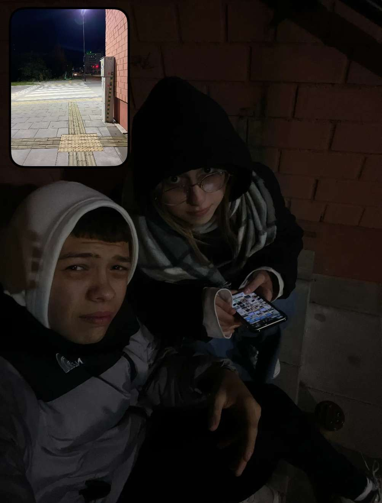

Ответ на вопрос.
Разговоры под подъездом, мини прогулки. Бесконечно разговоров. Тысяча чувств.
Твоя забота, советы, прикосновение. Они..они влюбляют меня в тебя. Честно.
Каждый раз я говорю тебе шопотом «аккуратней, а то в конечном итоге я влюблюсь в тебя..»
Я очень люблю тактильность, но я боюсь этого сама проявлять и когда человек делает первый шаг, боже, я такая рада!!!
Ты был всегда рядом в трудную минуту, тв всегда на связи, и не смотря ни на что, мы видимся за 24 часа хоть раз. Это…трогательно.
Я не хочу чувствовать себя отвратильной или тому подобие, и необходимо время, отойти от прежних отношений.
И в этот раз, начать отношения, хочу только со 100 проц уверенностью, что я влюблена в человека.
А сейчас я предпочту просто побыть наедине собой без отношений, ибо они хорошо меня сломали. И повторить ту же учесть не хочу я.
Мне нужно абсолютно быть уверенной как в себе, так и в тебе.
Прости…Макс…спроси через когда нибудь время. И давай на красивую дату.
